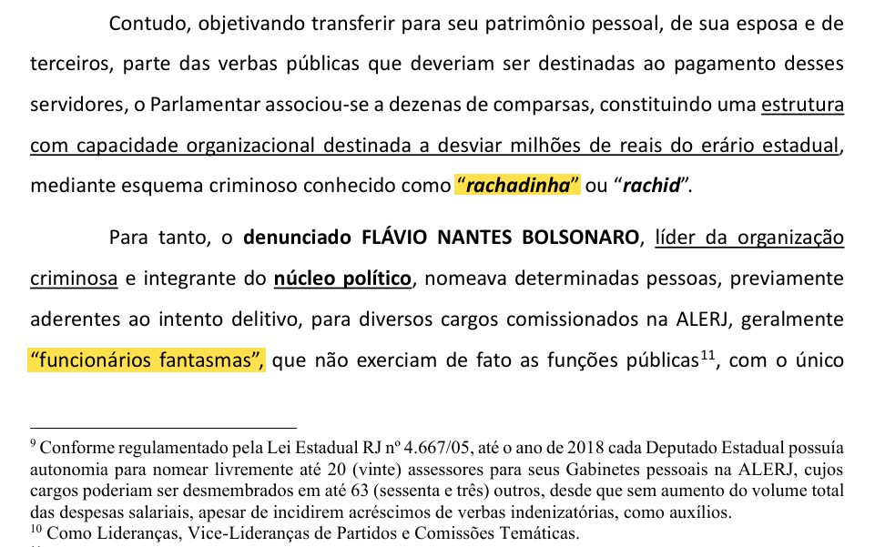

denúncia, página 9A denúncia das rachadinhas
A acusação do Ministério Público do Rio de Janeiro contra Flávio Bolsonaro e mais 16 pessoas, de outubro de 2020. O guia mostra o que o MP afirma, as provas que ele aponta e o que aconteceu com o caso depois.
290 páginas e 280 pontos marcados
Abrir o guia da denúncia